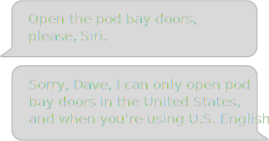
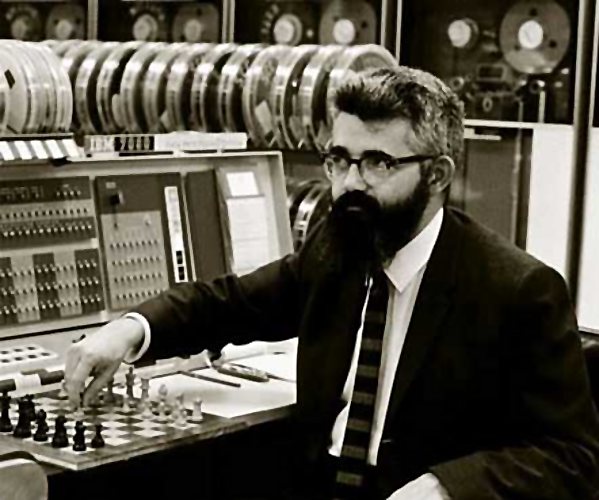
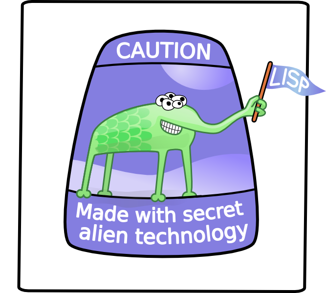

This presentation is an HTML5 website
Presentation template from http://html5rocks.com/
The Future is Clojure
Enterprise Ready Lisp Enlightenment
Bodil Stokke
@bodiltv
John McCarthy
1927–2011


John McCarthy, playing chess at Stanford's IBM 7090, 1967
Lisp is worth learning for the profound enlightenment experience you will have when you finally get it; that experience will make you a better programmer for the rest of your days, even if you never actually use Lisp itself a lot.

Paul Graham
Venture Capitalist, Y Combinator
Paul Graham
Entrepreneur, Viaweb, 1995

HAI I NEED UR PERFORMANCE REPORT BY NOON KTHXBAI
The Pointy-Haired Boss
The Industry Standard
Programming languages are equivalent,
therefore the standard is
the obvious choice.
Languages aren't equivalent
James Gosling built Java to address problems he saw in C++.
Thus, Java is a better choice than C++ for solving those problems.
Solve a problem by evaluating optimal
languages
and recruiting the right
competence?
Better just pretend there's no
problem
and stick with Java.
Languages gain power with abstraction
starting to look downright pretentious.
they're bordering on madness.
Try looking into that place where you dare not look. You'll find me there, staring back at you.
The Accidental Discovery
John McCarthy originally created
Lisp as a
theoretical exercise
in lambda calculus,
trying to
build a better Turing Machine.
Steve Russell read McCarthy's paper and discovered the Lisp machine could be implemented in machine code.
Everybody went "holy shit."
Why is Lisp so far ahead?
Lisp was never designed to be a programming language. It was originally just pure math.
The first real programming language, Fortran, was designed as an abstraction on top of machine code.
And deliberately designed programming languages have been catching up to Lisp ever since.
The Nine Pillars of Lisp
- Conditionals
- A function type
- Recursion
- Dynamic typing
- Garbage collection
- Everything is an expression
- A symbol type
- The syntax is the parse tree
- No distinction between compile time and runtime
- C: 2 out of 9.
- Java: 3 out of 9.
- JavaScript: 5 out of 9.
- Python: 6 out of 9.
- CoffeeScript: 6 out of 9.
- Ruby: 7 out of 9.
Only Lisp has 9 out of 9.
Only Lisp is written directly as a
parse tree,
and
only Lisp has no distinction
between
compile time
and runtime.
This is what enables Lisp's most powerful feature:
Macros.
Macros are programs that write programs
Macros are a way for the Lisp programmer to create higher levels of abstraction.
For any problem you want to solve, you can convert Lisp
into a domain specific language that can
do
exactly
what you need.
Simple projects could be written in any language.
If all you write is glue, the best choice is the language closest to what you're gluing.
But as complexity increases,
only Lisp can adapt to meet the
challenge.
Macros … are still, as far as I know, unique to Lisp. This … may be because if you do add that final increment of power, you can no longer claim to have invented a new language, but only a new dialect of Lisp.
Back to the Viaweb story
Before the web, you wrote in the
language of the OS.
This was
usually C.
In 1995, Paul Graham realised that for web
apps,
this was no longer
true.
Most people kept on using C.
Paul Graham's hypothesis
For a tech startup, abstraction is
a
huge competitive advantage.
faster than the competition.
Protip: When teams grow too big, agile processes fail.
Paul Graham decided to try writing the Viaweb product
in Lisp, to test this hypothesis.
It worked.
the pace of new features.
In business, there is nothing more valuable than a technical advantage your competitors don't understand.
Viaweb dominated the market, and was
eventually
acquired by Yahoo! for a
huge sum of money.
Paul is now a filthy
rich venture capitalist.
He gives credit to Lisp.
That's all very well for a startup.
But here in the Enterprise, my naive
friend,
we have this thing called legacy code.
preexisting knowledge and APIs with Lisp?
existing production environment?
Rich Hickey
Crazy hair makes up for lack of beard
Clojure
- Clojure is a Lisp for the JVM.
- It can talk directly to your Java code.
- There's also ClojureCLR for the .NET platform.
- With ClojureScript, it even runs in the browser.
That's cute, but we need a
robust language designed
for concurrency
and
gratuitous multithreading.
Concurrency for Breakfast
OH GOD

I CAN SEE... FOREVER
Thank you for listening!

Bodil Stokke
github.com/bodil
@bodiltv